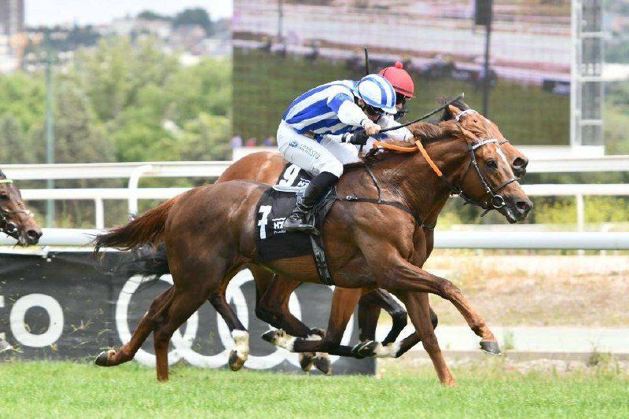

Doblete de la Cuadra Mediterráneo en la Poule de Potros con Majestad y Maximum Scepticism
La Cuadra Mediterráneo firmó este domingo un doblete de prestigio en la Poule de Potros disputada en el Hipódromo de la Zarzuela, primera clásica española reservada a la generación de tres años. El invicto Majestad cruzó la línea de meta en primer lugar, seguido por su compañero de propiedad Maximum Scepticism,…

La Cuadra Mediterráneo firmó este domingo un doblete de prestigio en la Poule de Potros disputada en el Hipódromo de la Zarzuela, primera clásica española reservada a la generación de tres años. El invicto Majestad cruzó la línea de meta en primer lugar, seguido por su compañero de propiedad Maximum Scepticism, mientras que Imagine completó el podio en tercera posición.
La prueba, denominada oficialmente Gran Premio Cimera y patrocinada por Santander Private Banking, se disputa sobre 1.600 metros en hierba y constituye la primera de las pruebas clásicas del calendario español para potros de tres años, equivalente nacional de las Guineas. La carrera abrió el cartel destacado de la jornada matinal del domingo, una de las dos reuniones programadas por La Zarzuela durante el puente del Primero de Mayo.
Majestad llegaba a la cita como gran favorito tras cerrar invicto sus dos primeras salidas. El potro, propiedad de la Cuadra Mediterráneo y entrenado por Guillermo Arizkorreta, ya había firmado una victoria de autoridad en el meeting madrileño del 22 de marzo bajo la monta de Jaime Gelabert. Su victoria en la Poule confirma a la cuadra como una de las grandes referencias de la temporada.
El segundo puesto correspondió a Maximum Scepticism, también de la Cuadra Mediterráneo, que ya había exhibido sus credenciales en abril al ganar el Premio Torre Arias sobre 1.400 metros. El triunfo doble subraya la profundidad de plantel del propietario, que sitúa dos potros suyos en lo más alto de la generación de 2023.
Imagine, otro de los aspirantes señalados en la previa por la prensa especializada por su contundente debut a comienzos de campaña, cerró el podio en una llegada que confirmó la condición de los favoritos de la pizarra.
La Poule de Potros forma parte, junto a la Poule de Potrancas, de las pruebas que sirven de antesala al ciclo clásico español de la temporada, que continuará con los Derby y Oaks españoles en las próximas semanas. La edición de 2026 reunió a un campo numeroso de candidatos, en línea con el número de inscritos que el Hipódromo de la Zarzuela había anunciado en la previa.
— Redacción de Galope al Día